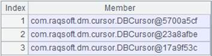

Description:
Get new values for the fields of records in a channel and update them into the channel.
Syntax:
ch.news(X;xi:Fi,…)
Note:
With channel ch, the function computes values of fields in record sequence X and updates the new field values into the channel. Fi is the new field name that will be automatically identified if the parameter is omitted; xi represents the new field values. This is an attached computation.
Parameters:
|
ch |
Channel |
|
X |
Record sequence |
|
xi |
Expression, whose results will be field values; the sign ~ used in the parameter references data from X instead of A. The sign # is used to represent a field with a sequence number |
|
Fi |
Field name in the given channel; will be automatically identified if the parameter is omitted |
Return value:
The original channel with new fields
Example:
|
|
A |
|
|
1 |
=demo.cursor("select * from EMPLOYEE") |
|
|
2 |
=demo.query("select * from EMPLOYEE") |
|
|
3 |
=channel() |
Create a channel |
|
4 |
=A2.group(GENDER;~:group) |
Group records by GENDER |
|
5 |
=A1.groupx(GENDER;avg(SALARY):avg) |
Group records by GENDER |
|
6 |
=A5.join(GENDER,A4:GENDER,group) |
|
|
7 |
=A3.news(group;EID,NAME,GENDER,#3:surname, age(~.BIRTHDAY):age,SALARY+50: salary,avg:AvgSalary) |
A6 is one of the groups; compute field values based on each group and concatenate the results into A3’s channel |
|
8 |
=A3.fetch() |
Fetch and store the existing data in the channel |
|
9 |
=A6.push(A3) |
Be ready to push data in A6’s cursor into A3’s channel, but the action needs to wait |
|
10 |
=A6.fetch() |
 Data in A6’s cursor is pushed into the channel and operations are performed as the fetch() operation is performed over A6 |
|
11 |
=A3.result() |
|